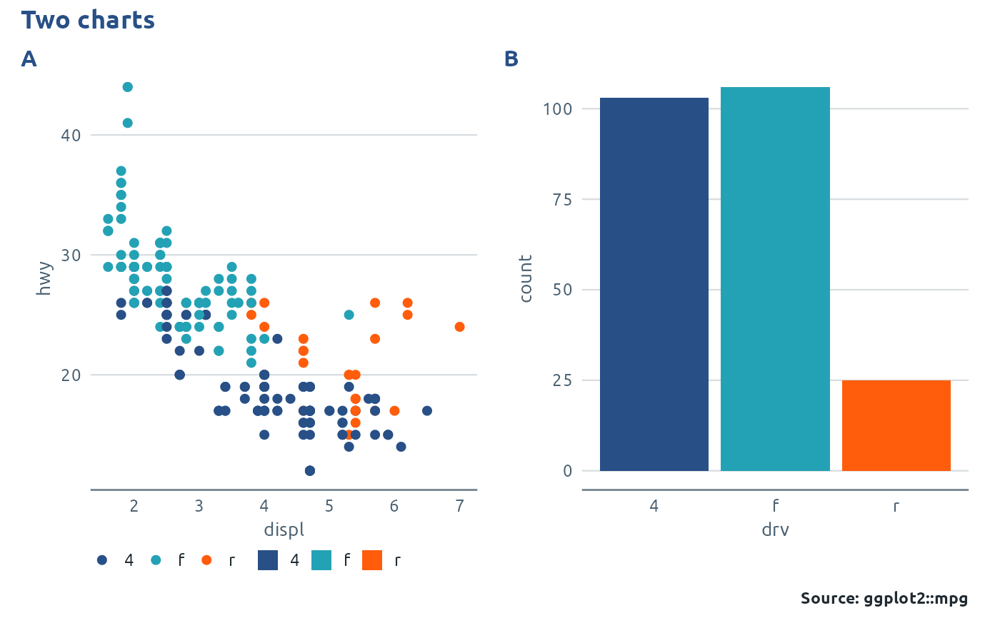

Puts plots side by side or in a grid, with one PHW title, subtitle and
source line for the whole figure. Use it when facets can't do the job,
for example to combine a map, a bar chart and a table-like chart. It is a
thin wrapper around the patchwork package, so the result can be changed
further with patchwork operators (+, |, /, &).
Arguments
- ...
ggplots (or other patchwork-compatible objects).
- plots
A list of plots, instead of or as well as
....- ncol, nrow, widths, heights, design
Layout, passed to
patchwork::plot_layout().- title, subtitle
Figure title and subtitle.
- source, date, caption_args
Passed to
phw_caption()for the figure's source line.- guides
"collect"merges identical legends from all panels into one, atlegend;"keep"leaves each legend with its plot.- legend
Position of collected legends.
- tag_levels
Panel tags, e.g.
"A"for A, B, C or"1".NULLfor none.- theme
The theme used for the figure title and source line.
Value
A patchwork object. Add phw_finalise() for the logo footer, or
save with phw_save().
Details
To keep the same colour for a group in every panel, give each plot the
same colour key, e.g. scale_fill_phw_d(key = "area"). With
guides = "collect", matching legends are then merged into one.
Examples
if (requireNamespace("patchwork", quietly = TRUE)) {
library(ggplot2)
p1 <- ggplot(mpg, aes(displ, hwy, colour = drv)) + geom_point() + theme_phw()
p2 <- ggplot(mpg, aes(drv, fill = drv)) + geom_bar() + theme_phw()
phw_arrange(p1, p2, title = "Two charts", source = "ggplot2::mpg", tag_levels = "A")
}
